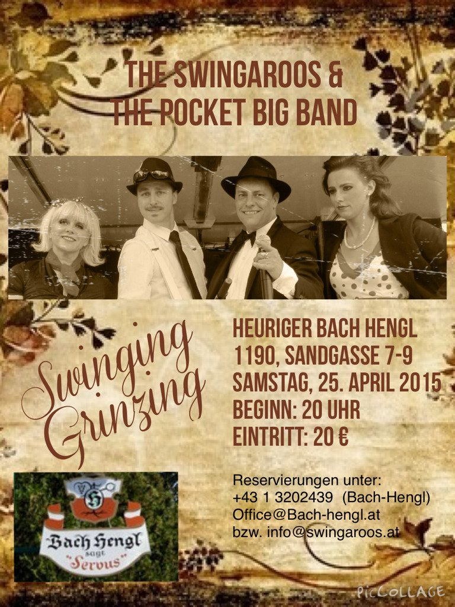
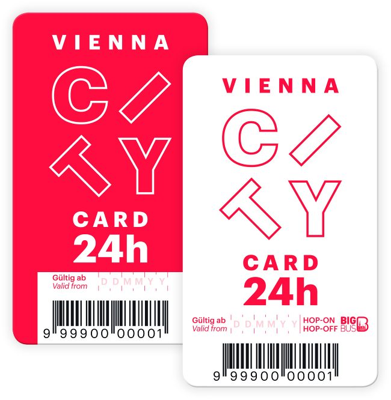

Tausend Jahre Weinkultur
Geschichte & Haus
Der Name Hengl kommt vom Buschen, der vor das Haus gehängt wird – dem Zeichen, dass ausgeschenkt wird. Älter als jede Marke, jeder Prospekt, jede Website.
Vom Capitulare de Vino zum Familiennamen
Tausend Jahre ist sie her, die ewig junge Weinkultur der Hengl-Weine. Eigentlich noch älter: Bereits im 8. Jahrhundert, im Jahr 795, hat Karl der Große in seinem berühmten Capitulare de Vino die Bedingungen zur Weinerzeugung und zur Ausschank des jungen Weines gesetzlich festgelegt.
Sichtbares Zeichen dafür ist der Buschen, der auf einer Stange vor das Haus gehängt wird – für jedermann erkennbar. Durch dieses Buschen-Hinaushängen wurde aus der Tätigkeit die Berufsbezeichnung HENGLER und daraus später der Familienname.
Heute führt Familie Franz Hengl den Weingut-Heurigen in der Sandgasse 7–9 in Wien-Grinzing. Ausgeschenkt wird ausschließlich Eigenbauwein – eben das macht einen echten Heurigen aus.
- 795 Karl der Große regelt im Capitulare de Vino Erzeugung und Ausschank des jungen Weines – die Geburtsstunde des Buschens.
- Seit dem Mittelalter Aus dem Buschen-Hinaushängen entsteht die Berufsbezeichnung Hengler – und daraus der Familienname Hengl.
- Heute Weingut-Heuriger Alter Bach-Hengl in der Sandgasse 7–9, geführt von Familie Franz Hengl. Täglich ab 15 Uhr, Live-Musik ab 18 Uhr.
- Laufend Kammermusikkonzerte, Matineen und Feste im Haus – von „Grinzing presents Beethoven“ bis Swinging Grinzing.
Galerie
Bilder aus dem Haus und dem Archiv
Bildmaterial von der bestehenden Website des Alter Bach-Hengl: Veranstaltungsflyer, Lageplan und Partnerhinweis.



Für Gäste aus aller Welt
Grinzing erleben
Der Heurige liegt mitten im historischen Weinort Grinzing. Wer mehr sehen möchte als das Gastzimmer: Wir bieten Weinverkostungen, Kellerführungen und Rundgänge durch den Weinort an – auf Wunsch mit anschließendem Buffet und Live-Musik.
Vienna City Card
Die offizielle Wien-Karte – jetzt auch als App. Damit erleben Sie die Stadt preisgünstig; Grinzing ist mit den öffentlichen Verkehrsmitteln gut erreichbar.
Video
Zur Geschichte des Hauses gibt es den Film „1000 Jahre Hengl Weine“, der auf der bisherigen Website eingebunden war. Wir zeigen ihn Ihnen gerne im Haus.